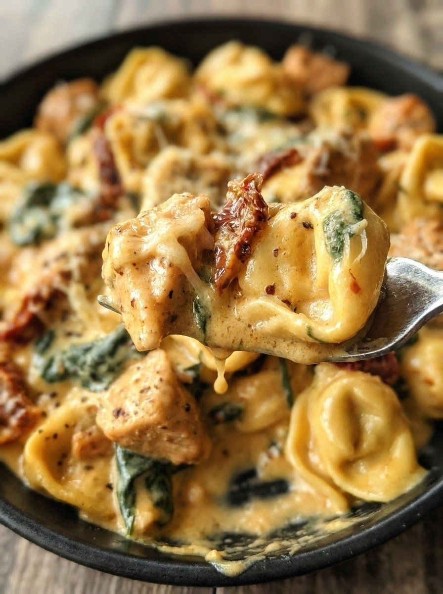

Marry Me Chicken Tortellini

- Meal
- Dinner
- Serves
- 6 (estimate; the source gives no yield, so the original amounts are kept)
- Protein
- chicken breast
- Cook
- stovetop, one skillet · ~25 min active / ~30 min total · easy
- Make-ahead / leftovers
- no / yes
- Mediterranean
- no
- WW tier
- heavy
- Status
- Trying out (probation)
Seared, seasoned chicken bites and frozen cheese tortellini simmered in a sun-dried-tomato, garlic, cream and Parmesan sauce with wilted spinach. One skillet.
Ingredients
Original amounts from the post (no yield stated). Kitchen estimate: 19 oz tortellini + 1½ lb chicken feeds the household of 6, so nothing is scaled.
Chicken
- 1½ pounds boneless, skinless chicken breasts, cut into bite-sized pieces
- ½ teaspoon black pepper
- ½ teaspoon Italian seasoning
- ½ teaspoon paprika
- 2 tablespoons olive oil
Sauce
- 2 tablespoons butter
- ½ cup sun-dried tomatoes in oil, drained and thinly sliced
- 3 teaspoons minced garlic (about 3 cloves)
- 1 cup low-sodium chicken broth
- 2 cups heavy cream
- 1 teaspoon Italian seasoning
- 1 teaspoon black pepper
- 1 teaspoon paprika
- 1 cup Parmesan cheese, finely shredded
To finish
- 1 package (19 oz) frozen cheese tortellini
- 2 cups baby spinach, roughly chopped
- Extra Parmesan and chopped fresh parsley, optional, for serving
Method
Source method (Recipes by Clare).
- Season the chicken: toss the chicken with ½ tsp each black pepper, Italian seasoning and paprika. Set aside.
- Cook the chicken: heat the olive oil in a large skillet over medium-high until shimmering. Cook the chicken in a single layer (in batches if needed) 6–8 minutes, turning occasionally, until golden and cooked through. Move to a plate.
- Start the sauce: turn the heat to medium-low and melt the butter in the same skillet. Add the sun-dried tomatoes and garlic; sauté about 30 seconds until fragrant (don't burn the garlic).
- Build the creamy sauce: pour in the broth and cream. Add 1 tsp each Italian seasoning, black pepper and paprika. Whisk until it bubbles gently, then whisk in the Parmesan gradually until melted and smooth.
- Combine: return the chicken and add the frozen tortellini and spinach. Stir to coat and simmer about 5 minutes, stirring occasionally, until the tortellini is tender and the spinach has wilted.
- Serve: off the heat, rest 2 minutes so the sauce thickens. Serve in bowls with extra Parmesan and parsley if you like.
Notes
- Servings: the post gives no yield. Serving count of 6 is Kitchen's estimate; amounts are the source's, unscaled.
- WW tier heavy: cream-based (2 cups heavy cream) + 1 cup Parmesan + cheese tortellini. Counts as the week's one heavy dinner when scheduled.
- Mediterranean ✗: poultry ✓ and some spinach, but butter/cream is the main fat and the tortellini is refined (1–2 of 4).
- Tomato: sun-dried tomatoes only, not a cooked tomato sauce; does not count toward the cooked-tomato target.
- Red / processed meat: none. Legumes: none. Fish: none.
- a fish-free plate / hidden fish: no fish or shellfish in the recipe, so no swap needed. Chicken broth and Parmesan normally contain none; check an unfamiliar broth/bouillon label for anchovy or fish sauce.
- Similar deck dishes: Chicken Piccata Meatballs (different sauce). No other tortellini card exists.
- Nutrition: not given by the source; none listed here.
Source: Recipes by Clare (@recipesbyclare), via X: https://x.com/recipesbyclare/status/2119792742351978705